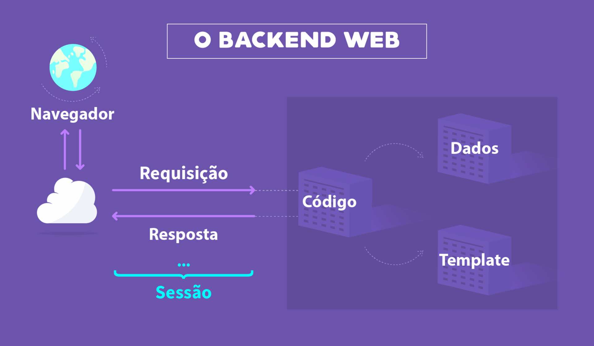
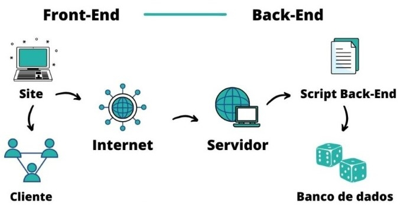

Disciplinas
FUNDAMENTOS DE WEB-T01-2024-2. Concluído
Materiais
Vídeo 2 - Desenvolvimento Web - Tecnologias para o Back-end sendProf° ministrante: Júlio Cezar Estrela. (UNIVESP)
Conteúdo
Tecnologias para o Back-end
Roteiro:- O que é back-end?
- Linguagens de programação do back-end?
- Frameworks back-end mais populares
- Códigos, templates e dados no back-end
- Habilidades do desenvolvedor back-end
O QUE É BACK-END.
É a parte da aplicação Web responsável por todos os recursos e funcionalidades como a integração de base de dados, login, gerenciamento de usuários, localização do servidores e conexões com os servidores
É neste que está a maior parte da lógica e da sintaxe da aplicação
O cliente/usuário não pode interferir no back-end, pois tem acesso apenas ao front-end, ou seja, à interface da aplicação
https://aprendelibvrefiles.blob.core.windows.net/aprendelibvre-container/course/criacao_de_sites/image/cursowebportug-07_xl.png 
https://www.aquiagora.net/images/grande/8/86500a44680de4_aaa.jpg
- O back-end garante integridade dos dados
- Funciona como intermediário entre a interface e o banco de dados que armazena os dados
- Quando um usuário se cadastra em um site, insere os dados como nome, cpf, endereço e senha
- Ele faz a ponte entre as informações incluídas no navegador e o banco de dados da aplicação
- Imagens e perfis de usuários também vão para o back-end
LINGUAGENS DE PROGRAMAÇÃO BACK-END.
Para postar uma foto, ou armazenar um video no Youtube, comprar uma pacote turístico, encontrar uma rota, alguém precisa dizer como o host/máquina precisa se comportar
Esse processo de passar instruções, testar e manter tudo em funcionamento é o que chamamos de programação
O desenvolvedor back-end é responsável por tudo que está nos bastidores de uma aplicação Web
Podemos dividir neste contexto as linguagens de programação em alto nível e baixo nível
- Linguagens de baixo nível
- Com sintaxe e semântica que se aproximam da linguagem de máquina e são mais antigas. Exemplo: C e C++
- Linguagens de alto nível
- São mais recentes, com sintaxe e semântica que se aproximam da linguagem humana. Exemplo: Python, Rails, Java, C#, PHP, JavaScript
FRAMEWORKS BACK-END MAIS POPULARES.
O back-end possui linguagens e frameworks distintos dos front- ends
- Frameworks conhecidos
- Springboot - evolução do framework Spring baseado em Java e é usado em JavaScript
- Django - Baseado em Python e oferece um mapeamento objeto-relacional, uma interface administrativa, URLs amigáveis ao usuário, sistemas de cache e de templates
- Laravel - Funciona com base no PHP, é open source e usado especialmente para sistema Web que fazem uso do padrão MVC
- JS - Open source e voltado para aplicações Web e APIs, sendo muito utilizado em servidores Node.js
- Ruby on Rails - Open source e que promete aumentar a velocidade e facilidade no desenvolvimento de sites orientado a banco de dados, pois pode-se criar aplicações com base em estruturas pré-definidas
- CodeIgniter - framework para desenvolvimento de aplicações PHP fazendo uso do padrão MVC
- Phoenix - escrito na linguagem funcional chamada Elixir e usa também o padrão MVC para construir as aplicações Web
CÓDIGOS, TEMPLATES E DADOS NO BACK-END.
No backend temos múltiplas opções e podemos escrever a lógica do nosso site dinâmico em diversas linguagens e plataformas que vimos anteriormente.
A partir do código do backend, temos acesso a dois pontos importantes no desenvolvimento de aplicações: os templates e os dados
Os templates do backend são a tecnologia que nos permite substituir apenas os dados dinâmicos em um documento html.
Template é em geral um arquivo de texto com determinadas especificações às quais alguns dados são aplicados, gerando desta forma um novo documento
Os dados sã oriundos das bases de dados.
Os bancos de dados, que veremos depois, têm um papel muito importante no desenvolvimento de sites dinâmicos porque eles contêm as informações que precisamos para gerenciar e gerar todo o conteúdo dinâmico da aplicação
HABILIDADES DO DESENVOLVEDOR BACK-END.
As principais habilidades incluem:
- Conhecer as linguagens de programação
- Gerenciar servidores
- Conhecer a infraestrutura de TI
- Priorizar a segurança
- Saber lidar com APIs
- Lidar com a escalabilidade das soluções
- Conhecer e realizar configurações em servidores
- Conhecer e modelar base de dados
- Boa comunicação
- Internalizar conceitos de UX (Experiência do Usuário) e UI (Interface do Usuário)
- Entender de forma avançada de gerenciamento de projetos
- Dominar tecnicamente a arquitetura de software e suas várias camadas (serviços, controladores e modelos)
- Otimização de códigos Entender de ferramentas de controle de versão
Referências:
- 1.https://edu.gcfglobal.org/pt/criacao-de-sites/tecnologias-e-conceitos-no-backe nd-web/1/
- 2.https://gobacklog.com/blog/back-end-guia-para-empreendedores/
- 3.https://cadabra.studio/blog/best-backend-technologies-list-comparison-exampl es
- 4.https://computerworld.com.br/carreira/back-end-5-principais-conceitos-para-d esenvolvimento-web/
- 5.https://kenzie.com.br/blog/back-end/
- 6.https://www.digitalhouse.com/br/blog/back-end-o-que-e-para-que-serve-e-com o-aprender